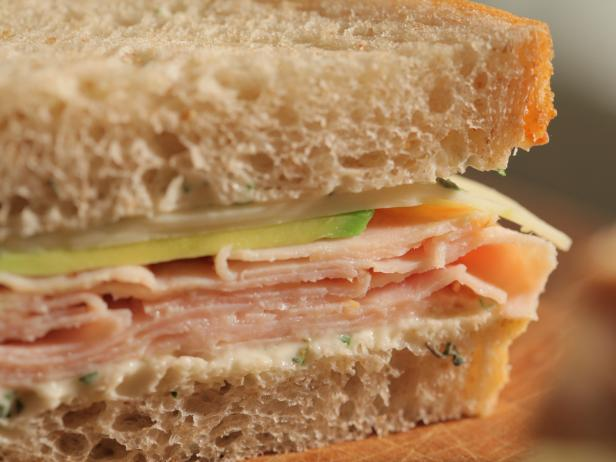

Turkey Sandwhich

Description
This is the most average turkey sandwhich that you will ever see.
Ingrediants
- sliced turkey from the deli
- rye bread
- mayo
- lettuce/tomatoe (optional)
Steps
- place your sliced tukey in-between the two slices on rye bread
- spread mayo evenly on one side of the rye bread
- (optional) place lettuce and tomatoe on same side as mayo
- close the bread, cut in half diagonally, enjoy!